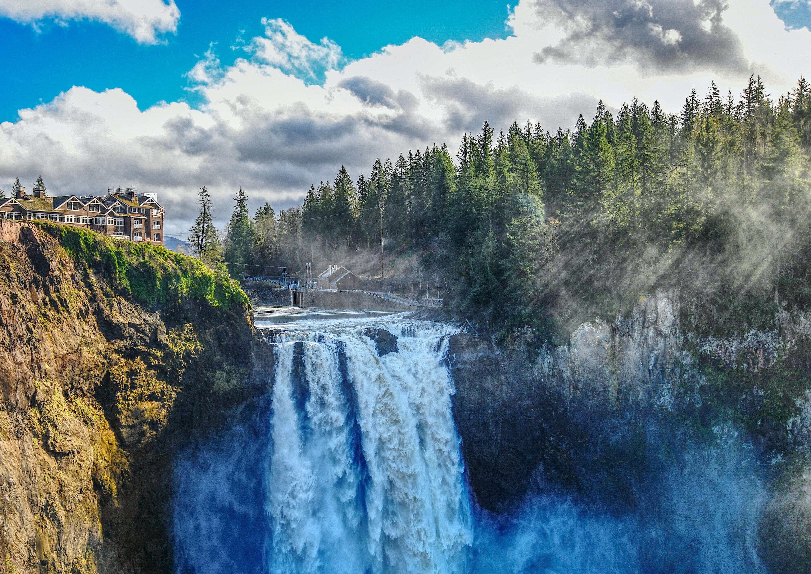

Snoqualmie Falls
About Snoqualmie
Located in the North Puget Sound region of Washington State, Snoqualmie was officially incorporated on June 9, 1903 (Snoqualmie Incorporates on June 9, 1903., n.d.). Since then, the city has grown into a sprawling mix of urban, suburban, and rural areas with a population growing greatly to a decent sum of about 13,500 (Washington Cities by population, n.d.) people as of 2022.